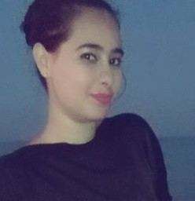

Wiem DRIDI
29/08/1997 (20ans)
Wiemdridi15.57@gmail.com
20671753
Tébourba 1130
Expériences professionnelles
Décembre 2017 organisatrice: madar ONG hotel shell beach hamamet
( madar ONG est un événement pour les étudiants contenants une série de formations
certifiantes: 80 participants)
Novembre 2017 formatrice certifiée Cabinet MedSirat
juillet 2017 stagiaire BNA Tébourba
Formations académiques :
2016-2019 licence fondamentale en gestion institut supérieur de gestion
Tunis
2016 Baccalauréat mathématiques Lycée Hannibal Tébourba
Formations supplémentaires :
25/09/2017 Sponsoring et techniques de négociation Cabinet MedSirat
Juillet 2017 Formation des formateurs Cabinet MedSirat
2014-2017 Psychologie Auto-formation
2014-2016 Sociologie Auto-formation
Activité :
Actuellement Département Presse Club Radio ISG
Actuellement Responsable RH et communication Maseer Tunisie
Actuellement Département Social media Tuni'SEO club ISG
2016-2017 Département événementiel Maseer ISG
2013-2015 Actrice et scénariste Club théâtre lycée hannibal
Tébourba